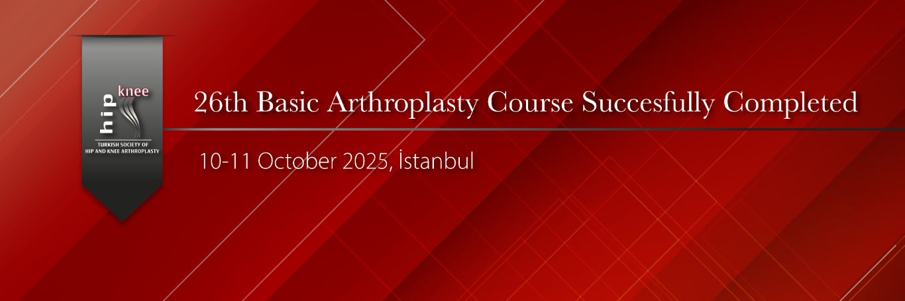

Our Basic Arthroplasty Course was successfully held on October 10–11, 2025, at Acıbadem Maslak Hospital, with the participation of 70 trainees and 46 faculty members. The course, which attracted great interest, featured hands-on practice on artificial bones, interactive roundtable discussions, and engaging video presentations. Throughout the two-day event, participants had the opportunity to interact one-on-one with esteemed professors and ask questions directly. The course concluded successfully, supported by the participants’ positive and sincere feedback.

Resim Galerisi